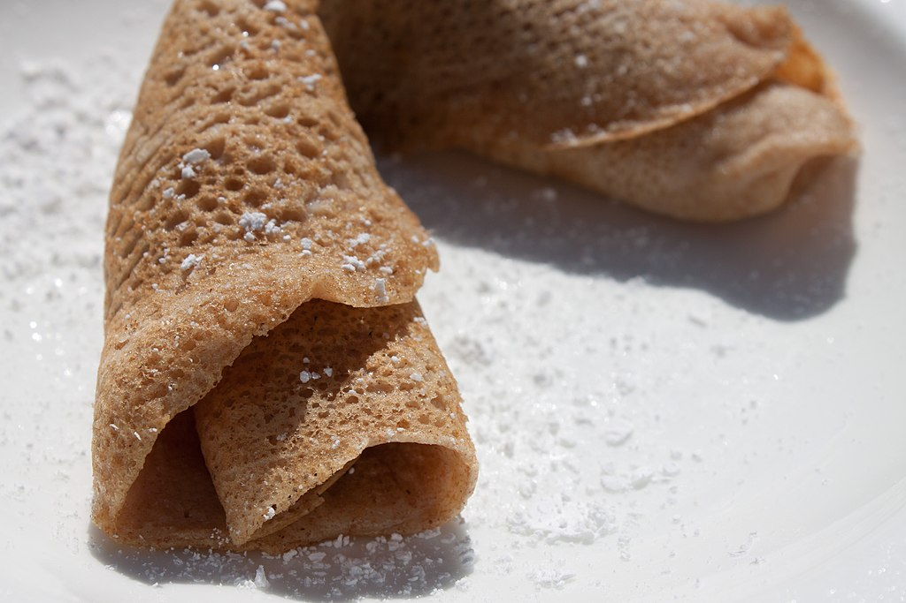

Crepes

Image source: wikicommons Joey Doll
How can anyone resist this simple to make treat? Crepes are like tasty empty, tasty canvas - you can fill them with savoury salami, or sweet nutella, or anything you wish!
This recipe was taken from this site.
Ingredients needed
- Eggs 2 pieces
- Vanilla sugar/powder1ks (Or one teaspoon of vanilla extract!)
- Oil 100ml
- Milk 300ml
- All-purpose Flour 200g
- Sparkling water100ml
- PInch of salt
Instructions:
- Whip eggs with vanilla powder, then add in and gently whip in oil, milk, flour and sparkling water.
- Add just a pinch of salt.
- Let the dough rest for at least 15 minutes.
- Fry on the pan on both sides.
Go back to the main page